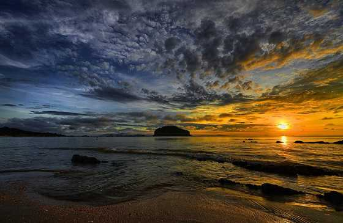
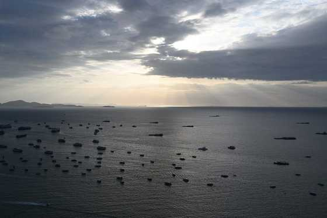
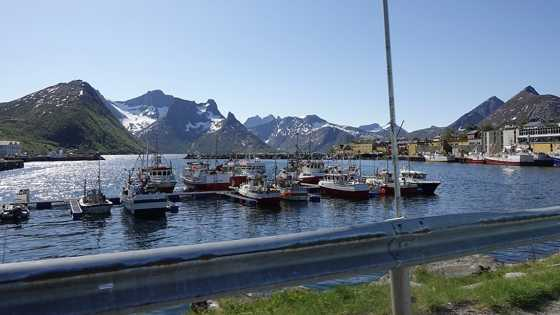
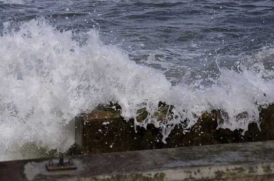
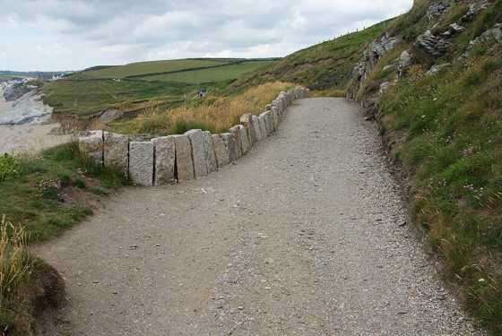
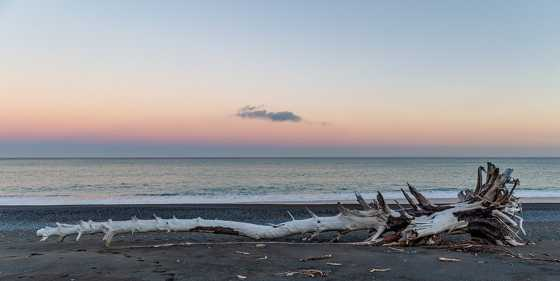
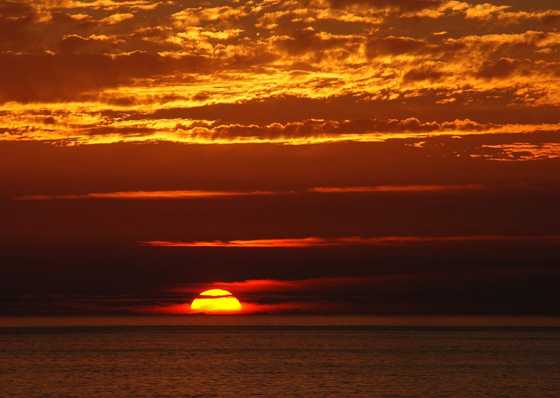
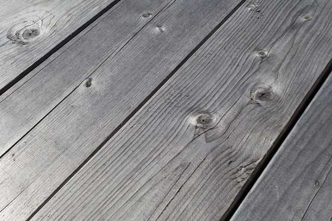

「穏やかな海と夕空」 paul morris oldskool2016 / CC0 1.0 / Wikimedia Commons
はまよしパン2139
海を渡る風のそばで、島のパンを一つずつ。
ABOUT
お店について
はまよしパン2139は、三重県鳥羽市の離島・答志島にあるパン屋です。お店のInstagramのプロフィールによると、2020年1月4日に営業を始め、2024年5月5日にリニューアルオープンしたとされています(Instagramでの表記は「はまよし製菓」)。
営業のご案内では、答志島の店舗のほか、鳥羽マリンターミナルでも販売する日があるとされています。島の暮らしと、島を行き来する船の旅の両方に、パンがそっと寄り添うお店というイメージで、このページを組み立てました。
情報源: お店のInstagram。「2139」の意味など、確認できなかったことは掲載していません。上記以外の言い回しは制作側の表現です。

「空の下に浮かぶ小舟の群れ」 PattayaPatrol / CC BY-SA 4.0 / Wikimedia Commons

「入り江の漁港」 Wolfmann / CC BY-SA 4.0 / Wikimedia Commons

「岩に寄せる波」 mattbuck / CC BY-SA 3.0 / Wikimedia Commons

「海辺の道と石垣」 Bill Boaden / CC BY-SA 2.0 / Wikimedia Commons
VOICE
口コミ(イメージ例)
以下は制作側が創作した例で、実際のお客様の声ではありません。
イメージ例
船を待つ間に立ち寄って、焼きたてのパンを買いたいです。
イメージ例
島を歩く散歩のお供に、ベーグルを一つ持って出かけたいです。
イメージ例
朝、答志島の海を眺めながら、クロワッサンを味わいたいです。

「浜辺の流木」 Michal Klajban / CC BY-SA 4.0 / Wikimedia Commons

「夕暮れの海」 Alvesgaspar / CC BY-SA 3.0 / Wikimedia Commons

「使い込まれた木の天板」 W.carter / CC0 1.0 / Wikimedia Commons
ACCESS
アクセス
| 店名 | はまよしパン2139 |
|---|---|
| 住所 | 〒517-0002 三重県鳥羽市答志町412-4 |
| 電話 | 準備中 |
| 営業日の目安 | Instagramの案内では、土曜〜火曜は答志島の店舗(午前9時〜)、金曜は鳥羽マリンターミナル(午前11時〜)とされています。水・木の記載は確認できませんでした。最新の情報はInstagramをご確認ください。 |
| 定休日・価格 | 準備中 |
| @hamayoshi2139 |